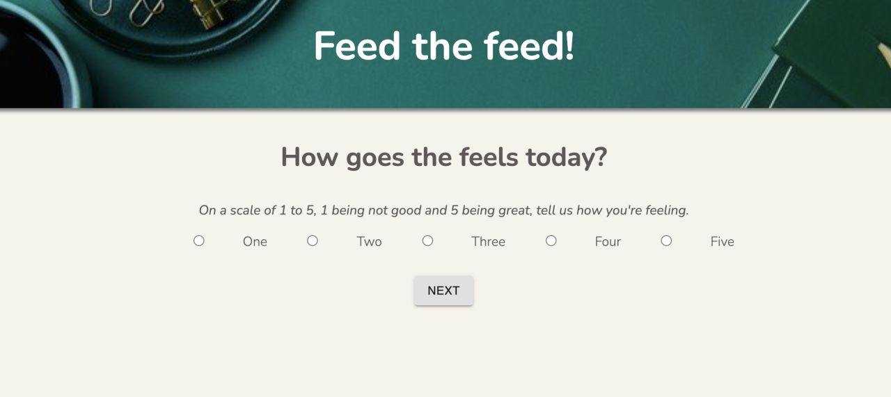

Main
About Me
Portfolio
Contact
Portfolio
Below are samples of my work.
In this application, users can create, log, and mark task as complete or revert back to an incomplete status. It is definitely a work in progress however, I invite you to click the button 'To-Do' below to run through it.
To-Do App
